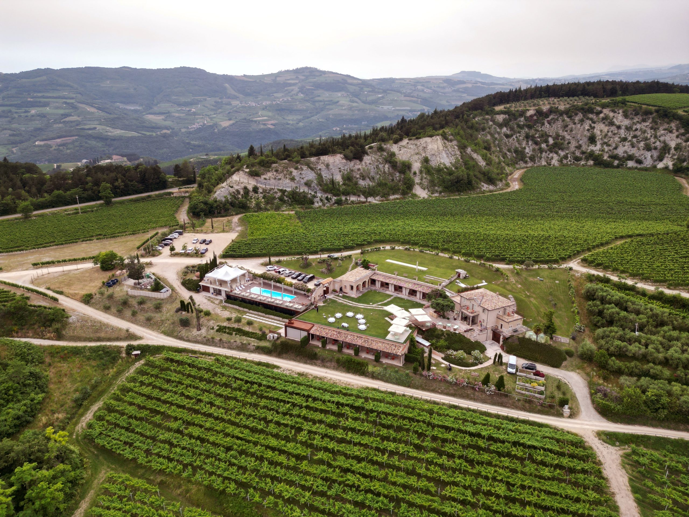
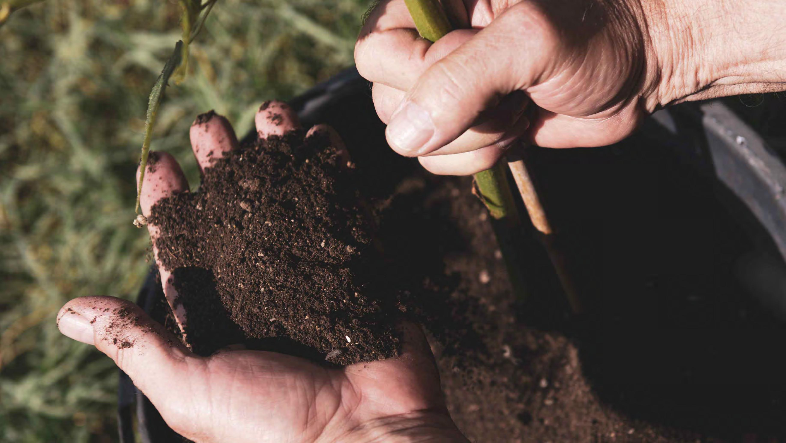
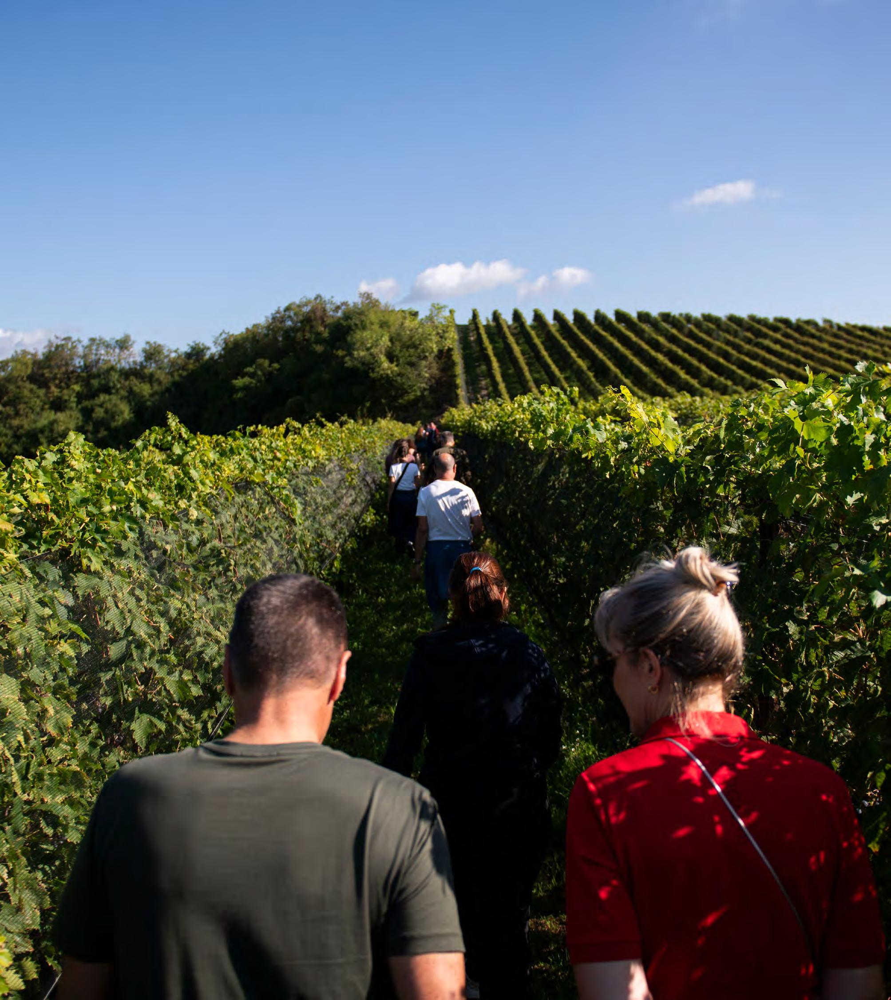
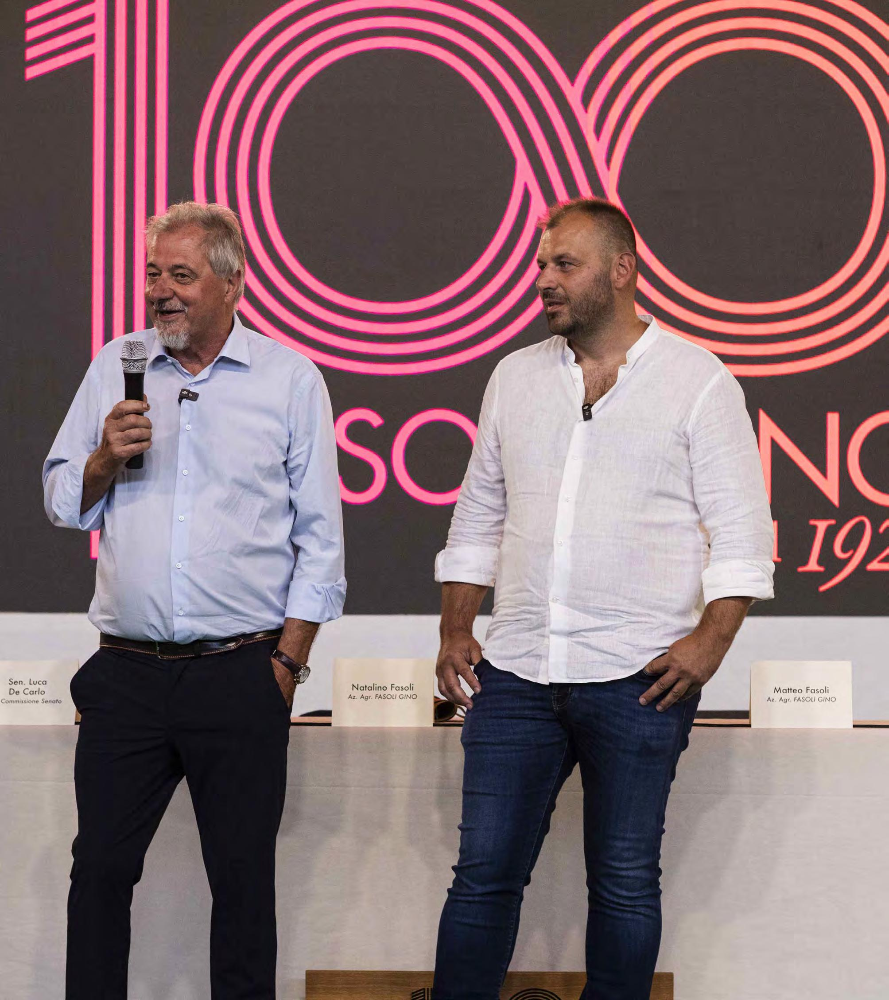
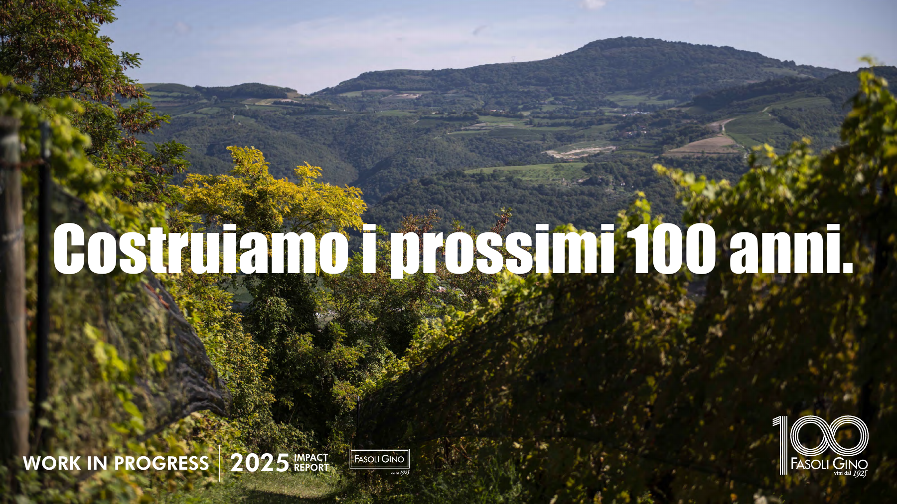
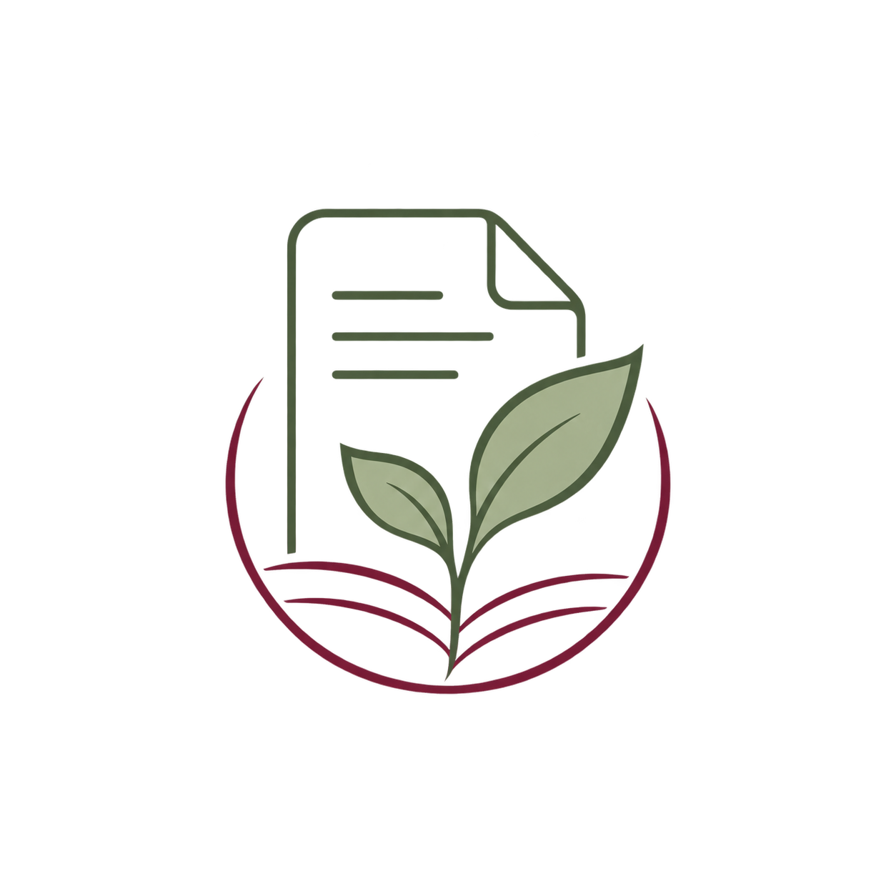

Equalitas
Equalitas è uno standard dedicato alla sostenibilità del settore vitivinicolo. Considera la gestione delle risorse ambientali, gli aspetti sociali e quelli economici dell’attività aziendale.

Dalla terra al vino, un percorso di sostenibilità tra agricoltura biologica, biodiversità e attenzione al territorio.
Tre ambiti distinti: la sostenibilità dell’organizzazione, il metodo biologico e le pratiche di vinificazione vegana.
Equalitas è uno standard dedicato alla sostenibilità del settore vitivinicolo. Considera la gestione delle risorse ambientali, gli aspetti sociali e quelli economici dell’attività aziendale.
La certificazione biologica riguarda sia la coltivazione delle uve sia la produzione del vino. Prevede regole sulle pratiche e sulle sostanze utilizzabili in vigneto e in cantina.
La certificazione Vegan riguarda la produzione del vino senza l’impiego di sostanze di origine animale. Alcune di queste, come albumina e caseina, possono essere utilizzate per la chiarifica del vino.
Gli indici Biodiversity Friend® valutano la qualità biologica del suolo, dell'acqua e dell'aria nei vigneti, attraverso attività di biomonitoraggio.
113,5
Indice IBS-bf
Soglia minima: 100
62
Indice IBA-bf
Soglia minima: 30
46,5
Indice IBL-bf
Soglia minima: 45
Le pratiche adottate da Fasoli Gino interessano diversi aspetti della gestione agricola e produttiva, dalla tutela del suolo all'uso delle risorse.
Gestione dei vigneti orientata alla rigenerazione del suolo e alla trasformazione delle superfici coltivate in aree di valore ecologico.
In vigneto, l'obiettivo è mantenere il consumo idrico netto a zero, senza utilizzare più acqua di quella raccolta attraverso le precipitazioni.
L'azienda utilizza fonti di energia sostenibili e produce energia autonomamente grazie a un impianto fotovoltaico da 99 kW.
Carta certificata FSC e bottiglie in vetro alleggerito contribuiscono a ridurre l'impatto ambientale del confezionamento e del trasporto.

Nei vigneti Fasoli Gino la gestione agronomica è orientata alla tutela della biodiversità e alla valorizzazione del territorio. Questo approccio trova un esempio significativo nel progetto di Tenuta Le Cave.
Tenuta Le Cave, a Tregnago, nasce da un progetto di recupero di un’area segnata dall’attività di una vecchia cava di marna. Il percorso ha compreso la bonifica dei terreni, l’impianto di nuovi vigneti e il recupero delle strutture industriali, affiancando alla produzione agricola un’attività di ospitalità legata al territorio.
Le attività della tenuta contribuiscono al mantenimento dei 10 ettari di bosco circostante e alla tutela della biodiversità. Il progetto unisce così il recupero di un’area dismessa alla cura del paesaggio e delle risorse naturali.
A questo impegno si affiancano i risultati dei rilievi sulla biodiversità, che evidenziano nei vigneti di Le Cave a Tregnago una qualità biologica del suolo generalmente più elevata rispetto agli altri appezzamenti esaminati. La cura del bosco e l’attenzione al suolo sono quindi due aspetti centrali del rapporto tra la tenuta e il suo territorio.
Progetti, incontri e collaborazioni che raccontano il rapporto tra Fasoli Gino, il territorio e la sostenibilità.

Nel 2025 Fasoli Gino ha celebrato il proprio centenario con la piantumazione di 100 alberi nei vigneti.

Incontri e collaborazioni rafforzano il rapporto dell'azienda con il territorio e la comunità.

Nel 2025 il confronto ha coinvolto temi come sostenibilità, cambiamento climatico, tecnologia e politiche agricole.
Nel 2025 la produzione aumenta rispetto all’anno precedente, raggiungendo 652.919 bottiglie. Nello stesso periodo diminuiscono i consumi di acqua, gas naturale e gasolio, mentre cresce il consumo di energia elettrica.
| Indicatore | 2021 | 2022 | 2023 | 2024 | 2025 |
|---|---|---|---|---|---|
| Energia elettrica (kWh) | 204.696 | 191.017 | 333.706 | 339.486 | 386.859 |
| Gas naturale (Smc) | 12.253 | 9.101 | 6.467 | 7.416 | 6.087 |
| Gasolio (L) | 8.000 | 6.900 | 12.700 | 23.700 | 13.200 |
| Acqua (m³) | 12.852 | 6.627 | 5.622 | 8.174 | 4.938 |
| Bottiglie prodotte | 734.000 | 718.000 | 581.235 | 542.768 | 652.919 |
Per maggiori informazioni consulta i report di sostenibilità pubblicati da Fasoli Gino.

Il Bilancio di sostenibilità 2025 evidenzia l'impegno pionieristico di Fasoli Gino nel settore vitivinicolo sostenibile, con particolare attenzione alla certificazione Equalitas e agli aspetti ambientali, sociali ed economici.
Scarica il report 2025
Scarica il report 2024